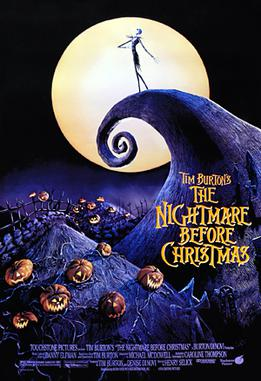

Neat stuff


This 1993 series of still frames shown very fast is about a puppet skellington monarch
who decides to drag in an entire sovereign state into his midlife crisis through cultural appropriation.
Directed by every mid-2000's emo kid role model Tim Burton who for some reason has not has an orginal film since
2005 and even then. It's message and struggles of it;s shockingly entitled main character have comically been
misinterpreted as seen by the metric ton of merchandise. Yes, I see you. You truly are unique with your
Jack Skellington hoodie that was 35% off at Spencers.
A folk-punk-pop suspiciously queer-but-not-too-queer-jk-we're-totally-straight band that wandered out of the
Canadian wilderness one day. Mostly feral, the lead singer will die if not given a steady diet of hair products and
Cole Porter records. Yet they are near and dear to my heart and I'm heavily considering driving to Seattle just to
see them open for a crummy band I've never heard of.
Mother Mother; I would commit terrible crimes for you.